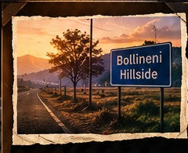

Delayed medical intervention
Golden-hour minutes are lost while no one knows a crash happened.
TEAM LARP STACK · DATATHON'26
AI-POWERED SMART COMMUTING ECOSYSTEM
From impact to emergency response —
connected, intelligent, and fast.
01 / THE PROBLEM
of two-wheeler fatalities — as presented in the project context — are linked to delayed medical response and non-compliance with helmets.
PROBLEM / CONTEXT STATISTICGolden-hour minutes are lost while no one knows a crash happened.
Microsleep and attention issues can go undetected until it is too late.
No real-time visibility for authorities to intervene or reroute.
Fleets and commuters operate with limited safety analytics.

BOLLINENI HILLSIDE02 / THE STORY BEHIND SAFEMOVE
This project was inspired by a real-life incident we witnessed at Bollineni Hillside.
Seeing an accident unfold and witnessing how critical every minute becomes made us realize that detecting an accident is only the first step — sending the right help to the right place, fast, can make a difference.
Born from an incident we witnessed. Built so that critical minutes don't go unnoticed.
03 / THE SOLUTION
Affordable sensors and AI make everyday travel safer, smarter, and more efficient — starting at the helmet.
HELIX — impact sensing, chin-strap compliance and in-cabin/helmet computer vision.
Dual-verification fuses accelerometer + G-force with strap/helmet state to reduce false alarms.
GPS-tagged crash data reaches the cloud dashboard and demonstrates a rapid responder workflow.
04 / RED ZONE ALERTS
Interactive prototype: simulated accident history is converted into risk zones and rider warnings.
This map is a local prototype simulation, not a live emergency or public accident database.
05 / SYSTEM ARCHITECTURE
06 / END-TO-END DEMO
A simulated prototype sequence — no real emergency services are contacted.
Accelerometer detects abnormal motion / G-force.
Dual verification checks accelerometer + helmet / chin-strap state.
Simulated accident coordinates are attached to the event.
ESP32 / Raspberry Pi processes the event locally.
Incident is transmitted to the SafeMove cloud workflow.
Dashboard receives the verified incident.
A simulated emergency notification is displayed.
07 / INTERACTIVE HELMET
Drag the helmet. Tap a hotspot to inspect the role of each component.
Explore the engineering concept behind SafeMove.
Detects acceleration and abnormal impact.
Checks helmet compliance as part of dual verification.
Captures simulated accident location and processes the event at the edge.
08 / COMPUTER VISION
09 / TECH STACK
ESP32 · Raspberry Pi · MPU6050 · GPS
OpenCV · MediaPipe · TensorFlow Lite
Flutter · React · HTML · CSS · JavaScript
Node.js · Flask · Express.js · Socket.io · Firebase
OpenStreetMap concept / simulated local demo
Bluetooth · Wi-Fi · GSM · LoRa
10 / METRICS
70% is retained as the project’s problem/context statistic. Prototype targets and cost estimates are labelled as such rather than presented as independently verified real-world results.
11 / ECOSYSTEM
Two-wheeler riders, delivery fleets and insurers are existing target groups in the project concept.
Hardware purchase, fleet subscription, insurance partnerships, and institutional deployment are existing project pathways.
Personal data is encrypted, necessary location data is used, consent is required, and alerts are verified.
Cloud telemetry, live dashboard state and emergency workflows connect the helmet to the wider SafeMove ecosystem.